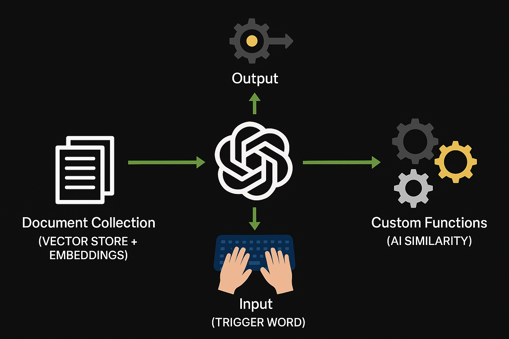
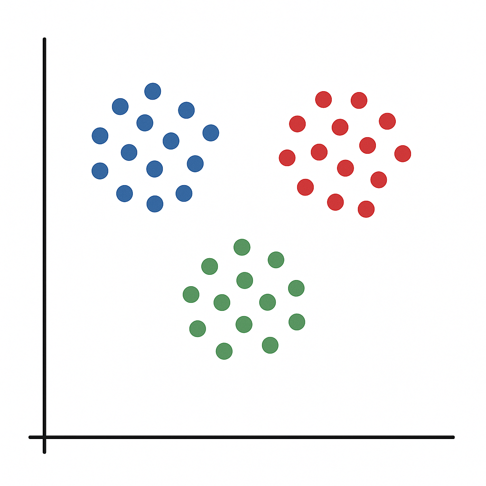
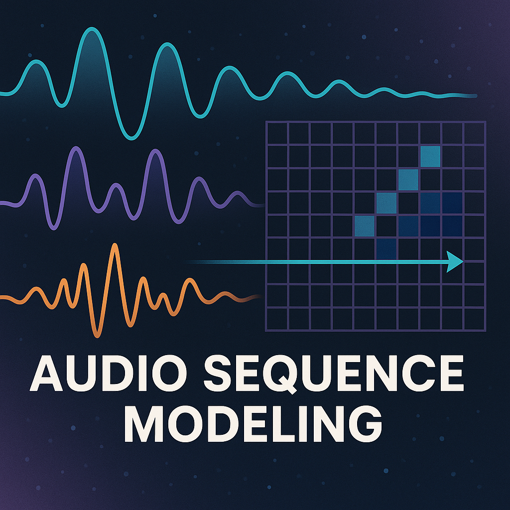

Education

University of Toronto
BASc in Engineering Science, Machine Intelligence Major
Graduated: April 2025
Hello, I'm
Engineering Science (Machine Learning) Graduate from The University of Toronto
I transform data into insight and insight into action. Blending advanced analytics with AI / machine learning, I build scalable, business-focused solutions that uncover patterns, drive decisions, and solve complex real-world problems.
I'm a data and analytics practitioner and a new graduate with a BASc in Engineering Science (Machine Intelligence major) from the University of Toronto. With experience as a Data Scientist at Scotiabank, projects, and a background in research, I specialize in building scalable data-driven analytics and machine learning solutions that drive business value.
My expertise includes predictive modeling, optimization algorithms, and data pipeline engineering. I'm passionate about translating complex data problems into actionable insights and developing innovative AI solutions.
BASc in Engineering Science, Machine Intelligence Major
Graduated: April 2025
Developer
Cloud Engineering · Core Banking Technology
Data Scientist Intern
Marketing Analytics · Machine Learning Delivery
Undergraduate Research Assistant
Optimization Research · Applied ML
Project Lead
Applied Audio ML · Student Team Leadership
Visualizing bedroom designs based on user-provided style descriptions is often difficult and requires expensive interior design consultations.
Created an app that lets users input their preferred bedroom style, then uses AI to generate photorealistic bedroom design visualizations.
Won the AMD Canada-wide Innovation Showcase Competition with this project. Users can generate customized bedroom designs in seconds without design expertise.

Engineering consultants needed a way to quickly access information from large volumes of technical reports.
Designed a full-stack RAG chatbot architecture integrating ChatGPT's API, Hugging Face embeddings, and a vector database for document retrieval.
Delivered a system capable of processing 200+ documents, received approval for cloud deployment after successful demo to VPs and senior leadership.

Traditional clustering algorithms struggled with large operational datasets and outlier sensitivity.
Developed a novel clustering algorithm using mixed-integer programming for large operational datasets (1MM+ data points).
Co-authored publication accepted for AAAI 2023 Conference, created a more robust clustering method that handles outliers and cluster imbalances better.

Environmental agencies needed better tools to detect and classify noise pollution in urban environments.
Optimized a pre-trained deep learning model for noise pollution detection and managed data ingestion for processing audio spectrograms.
Boosted classification accuracy by 20%, delivering data-driven solutions to support environmental decision-making for Aercoustics Engineering Ltd.